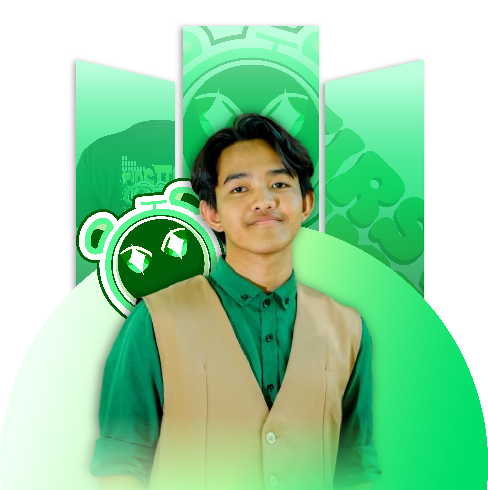

Tim Pengembang
Di Balik Layar Pilih.in
Kami adalah tiga mahasiswa Sistem Informasi UPN "Veteran" Jawa Timur yang berkolaborasi untuk menciptakan solusi bagi calon mahasiswa agar tidak merasa salah jurusan.

Naufal Ghani B.
Project Manager
NPM: 24082010162
Memimpin jalannya proyek, mendesain infrstruktur antarmuka (UI) menggunakan Tailwind CSS, dan memastikan user experience (UX) yang nyaman digunakan.
Nicholas Napitupulu
Frontend Developer
NPM : 24082010158
Fokus pada implementasi kode HTML dan struktur web. Memastikan setiap komponen tampilan di Pilih.in dapat diakses dengan responsif melalui HP maupun laptop.
Faiz Ihda Husni Husodo
Backend & Logic
NPM : 24082010138
Menangani User Experience (UX) dan logika di balik layar, termasuk alur tes minat bakat, pemrosesan hasil, dan integrasi data untuk memberikan rekomendasi jurusan yang akurat.